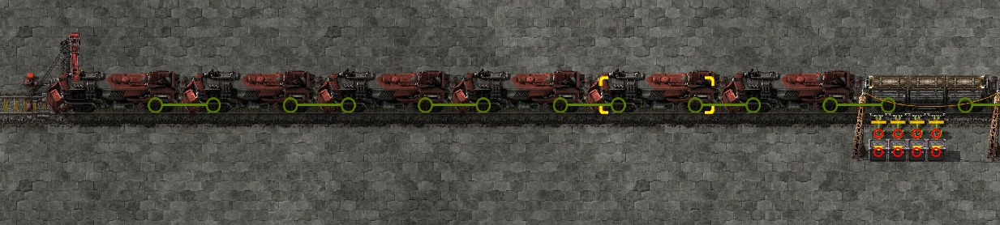

Making the train wait at the station instead of a signal to keep inserters picking up from inactive can give a significant performance improvement.
Stevetrov noticed that when a train is waiting at a signal in front of an inserter picking up from the train, the inserter goes to active state (it remains inactive if no train is in front of it). However, if the train is at a station and unloading from an empty train, the inserter remains inactive. I wanted to see if there could be significant savings from making the train stay at the station via circuit network condition instead of waiting at the signal, thereby making the inserters remain inactive.
As can be seen in the image below, the inserters are awake when the train is waiting at the signal:
And when the train is at the station but empty, the inserters are sleeping:

To test this, I made a looping track with two 6-12 trains. The track has two stations; station 1 contains two inserters loading Iron Ore from infinity chests into each wagon. Station 2 contains four inserters unloading into void infinity chests from each wagon. This means unloading will happen twice as fast as loading. Signal are setup such that the train leaving station 2 will wait at the same position as when it is at the station until the train at station 1 starts to move. A whole loop of the two trains switching spots and then filling/emptying (respectively) takes approximately 45 seconds, or 2700 ticks.
For the circuit controlled case, I made the following changes from the signal controlled case:
I then copied the whole setup 250 times,giving a total of 500 trains in each map, and used the following console command to make all the trains active simultaneously and save the map.
/c
for _, ent in pairs(game.player.surface.find_entities_filtered{name = "locomotive"}) do
ent.train.manual_mode = false
end
game.tick_paused = false game.auto_save("test-000105.signal")
We can see that the circuit controlled setup is significantly better performing than the one where the train waits at the signal; this appears to be a very worthwhile optimization if you regularly have trains stopped at a signal in a position where inserters are set to pick up from the train.
Let's dig into the data a little more and see what the per-tick graph looks like.
We can see here that for the first part of the test, the performance of the two tests are basically identical. Then the update time decreases on both when the train at station 2 is emptied and the inserters go inactive. However, in the signals test the train moves to waiting at the signal after that, making the 12000 inserters ready to grab from it wake up, and raising the average update time for that portion of the test by approximately 4ms as compared to the circuit controlled case where the inserters go to sleep. Performance is actually worse here than when all the inserters are swinging in the first half of the test.
All maps will be uploaded here.
If you have a base where it is likely that trains will be waiting at signals in such a way that the train is in front of inserters set up to unload from the train, this optimization could be very worthwhile. The benefits of it will vary significantly with the design of your particular base; some bases may not benefit from this at all.